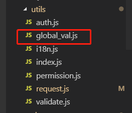

目录
A界面赋值的a变量，作为记录状态值（标志）需要被其他几个界面使用。其他几个界面亦可以改变a状态值。
A界面有a字段，B界面没有a字段，但需要调用a字段。
使用VUEX管理状态与字段值，但有种杀鸡用牛刀的感觉，稍微显重了一点。
轻量，简单。
故本文使用全局变量法解决1中提出的两个问题
在工具文件夹，创建glabal_val.js

export default{
sso_flag:"0",
set_sso_lag(sso_flag){
this.sso_flag = sso_flag;
}
}import global from '@/utils/global_val'
global.set_sso_flag(1)
也可global.set_sso_flag=this.sso_flag直接进行赋值
在B界面DOM 标签里结合VUE的v-if,v-else-if指令进行逻辑判断
<div v-if="global.sso_flag==0">
</div>
<div v-else-if="global.sso_flag==1">
</div>